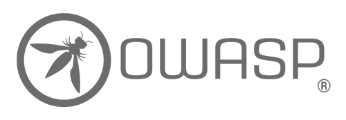
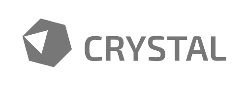

NOIR
Noir는 정적 분석을 통해 엔드포인트와 잠재적 취약점을 발견하여 화이트박스 보안 테스트를 향상시키고 보안 파이프라인을 간소화하는 공격 표면 탐지기입니다.
엔드포인트 발견
소스 코드에서 직접 API 및 웹 엔드포인트와 매개변수를 추출하여 애플리케이션의 공격 표면을 포괄적으로 분석합니다.
다중 언어 지원
다양한 프로그래밍 언어와 프레임워크를 지원하여 다양한 프로젝트 포트폴리오 전반에서 광범위한 호환성을 보장합니다.
취약점 탐지
규칙 기반 패시브 스캔을 수행하여 잠재적 보안 취약점을 식별하고 신속한 해결을 위한 상세한 인사이트를 제공합니다.
DevOps 통합
cURL, ZAP, Caido와 같은 인기 있는 DevOps 및 보안 도구와 원활하게 통합되어 기존 보안 파이프라인을 향상시킵니다.
유연한 출력 형식
JSON, YAML, OpenAPI를 포함한 다양한 형식으로 명확하고 실행 가능한 결과를 생성하여 다른 도구에서 데이터를 쉽게 사용할 수 있습니다.
AI 기반 분석
AI와 대규모 언어 모델(LLM)의 힘을 활용하여 익숙하지 않거나 지원되지 않는 프레임워크에서 숨겨진 API와 엔드포인트를 발견합니다.
개발 환경


오픈 소스 프로젝트
OWASP Noir는 커뮤니티가 ❤️로 구축한 오픈 소스 프로젝트입니다. 기여하고 싶으시다면 기여 가이드를 참조하고 멋진 변경 사항과 함께 풀 리퀘스트를 제출해 주세요!
 기여 가이드 보기
기여 가이드 보기